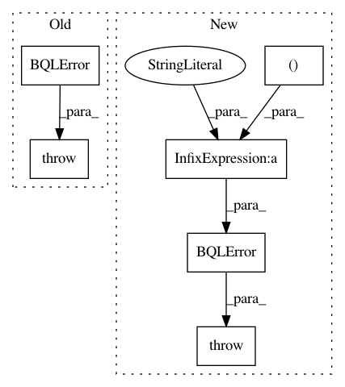

eb6d623d6cb675708916529808457b57e630d80d,src/bqlfn.py,,bql_column_correlation,#Any#Any#Any#Any#Any#Any#,72
Before Change
"No correlation for latent variable: %r" %
(core.bayesdb_variable_name(bdb, population_id, None, colno0),))
if colno1 < 0:
raise BQLError(bdb,
"No correlation for latent variable: %r" %
(core.bayesdb_variable_name(bdb, population_id, None, colno1),))
(st0, st1, data0, data1) = bql_variable_stattypes_and_data(bdb,
population_id, colno0, colno1)
if (st0, st1) not in correlation_methods:
raise NotImplementedError(
After Change
if colno1 < 0:
varname = core.bayesdb_variable_name(bdb, population_id,
generator_id, colno1)
raise BQLError(bdb, "No correlation for latent variable: %r"
% (varname,))
(st0, st1, data0, data1) = bql_variable_stattypes_and_data(bdb,
population_id, colno0, colno1)
if (st0, st1) not in correlation_methods:
raise NotImplementedError("No correlation method for %s/%s."
In pattern: SUPERPATTERN
Frequency: 3
Non-data size: 6
Instances
Project Name: probcomp/bayeslite
Commit Name: eb6d623d6cb675708916529808457b57e630d80d
Time: 2017-12-01
Author: fsaad@mit.edu
File Name: src/bqlfn.py
Class Name:
Method Name: bql_column_correlation
Project Name: probcomp/bayeslite
Commit Name: 71fd8ae834b846f9ae52e99e134297e8bc3e6d93
Time: 2017-11-22
Author: fsaad@mit.edu
File Name: src/bqlfn.py
Class Name:
Method Name: bql_column_correlation_pvalue
Project Name: probcomp/bayeslite
Commit Name: 507cf257bc195742af09b8990e77b13f4a10ab42
Time: 2017-06-17
Author: fsaad@mit.edu
File Name: src/metamodels/cgpm_metamodel.py
Class Name: CGPM_Metamodel
Method Name: initialize_models